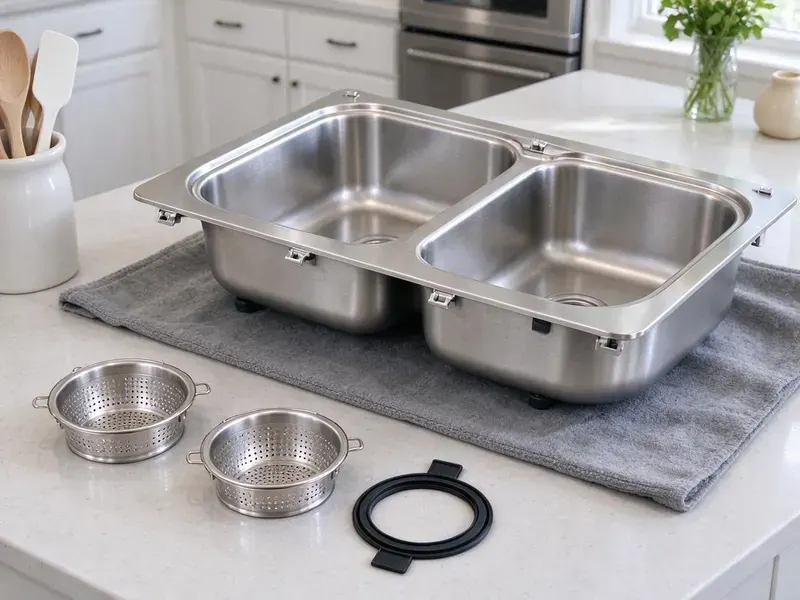

Kitchen Sink Installation in Seattle, WA
FHN Plumbing installs kitchen sinks in Seattle, WA supported, level and leak tested, so the bowl drains clean and the cabinet stays dry.
- Farmhouse and Undermount Installs
- Flat Install Price
- Labor Guaranteed
- New Traps and Strainers

Finish Your Kitchen Remodel with a Proper Sink Install in Seattle, WA
Call with your sink model and we will give you a clear installed price.
Kitchen Sinks Set and Plumbed in Seattle, WA
FHN Plumbing installs kitchen sinks so they drain right on the first day, from basic 22 gauge stainless to heavy fireclay farmhouse bowls. Code matters here. Every drain, vent tie-in and supply line follows the plumbing rules adopted in Washington, which keeps the job clean if an inspector ever looks.
Work we handle every week:
- Quarter-turn stops and new supplies
- Strainer, trap and faucet hookups
- Double-bowl continuous waste with disposal and dishwasher

Additional Kitchen Plumbing Services in Seattle, WA
Our kitchen plumbing services in Seattle, WA cover sinks, disposals, dishwashers, and grease traps so your kitchen stays clean, safe, and fully functional.


Customers
Why Choose FHN Plumbing for Kitchen Sink Installation in Seattle, WA?
Our plumbers know how Washington homes are framed and plumbed. It affects how we set the sink. Older houses often have a wall stub set too high for a deep new bowl, and we lower it so the trap drains properly instead of holding water.
- Code Knowledge, Our plumbers work to Washington plumbing code on traps, vents and dishwasher drains.
- Full Hookups, Faucet, disposal, dishwasher and filter lines in one visit.
- Heavy Sink Support, We build support frames for cast iron and fireclay farmhouse sinks.
Citywide Coverage
Our service area covers all of Seattle, WA and the towns around it. The drive seldom affects the quote. We schedule installs by area each day, which keeps drive time down and lets us offer the same flat price on a sink install across most of the region.
Experienced Team
Our installers have set sinks from Kohler, Blanco, Elkay, Kraus, Franke and Ruvati. Material does not slow them. Each material, from stainless to fireclay, needs its own sealant, strainer and mounting hardware, and the crew knows them all.
Safety-First Approach
Every install includes a properly vented trap and an air gap or high loop on the dishwasher drain, as Washington plumbing code requires. Fittings on drinking water are lead-free. We also check that the trap seal depth is right, since a trap that is too shallow can lose its water and let odors back into the room.
Trusted Certified Seattle Plumbing Services Professionals
At FHN Plumbing, we are proud to offer certified plumbing services throughout Seattle, WA. Credentials matter in this trade. Our plumbers hold recognized industry credentials, and they follow strict safety and quality rules on every repair, installation and maintenance call we run.
Call Us Now PHCC Plumbing Contractor Recognition
PHCC Plumbing Contractor Recognition Better Business Bureau (BBB) Accreditation
Better Business Bureau (BBB) Accreditation Angi Certified Pro
Angi Certified Pro ISO 9001 Quality Management Certification
ISO 9001 Quality Management CertificationKitchen Sink Installs We Handle in Seattle, WA
Farmhouse Sink Plumbing in Seattle, WA
Fireclay and cast iron farmhouse sinks can weigh well over 100 pounds empty, before a single drop of water goes in. We build a support frame inside the cabinet and set the sink level before the counter is installed. A deep bowl means a lower trap. We plan the drain for that depth from the start.

Emergency Sink Replacement in Seattle
A cracked bowl or a rusted-through strainer can flood a cabinet within hours. First, close both angle stops and stop using the sink. We carry common sizes. If you have a standard 33 by 22 inch drop-in, we can usually remove the damaged sink and set a new one that day.
Stainless Sinks With Sound Pads in Seattle
Budget stainless sinks ring like a drum when dishes hit them or the disposal runs. Better sinks come with rubber pads and an undercoating, and if yours does not, we can add a coat of spray undercoating before it goes in. It is a small thing. Once the bowl is mounted, the space underneath is hard to reach, so this is a job worth doing while the sink is still on the floor.
Undermount Sinks on Stone in Seattle, WA
Stone shops vary on how they mount undermounts. Some epoxy threaded studs into the stone, others use a rail system, and we work with whichever one your countertop shop prefers. The bowl is braced regardless. We do not connect the trap until the adhesive has cured.
New Construction Sink Rough-In in Seattle, WA
The rough-in decides where the drain and valves end up long before the cabinets arrive. We usually set the kitchen drain stub around 16 to 20 inches off the floor, then adjust for deep bowls or a disposal so the trap does not end up below the wall outlet. Venting happens at this stage. We work from your sink and faucet specs to avoid moving pipe later.
Farmhouse Sink Installation in Seattle, WA
Apron-front sinks rest on a support frame built into the cabinet, not on the countertop. We build that frame from 2x4s or a steel bracket, set the sink dead level and leave the right reveal for the stone shop. We plan the drain early. A lot of them drain toward the back, so the trap layout has to match.
Drop-In Kitchen Sink Installation in Seattle
Sitting on the counter by their rim, drop-in sinks are a natural fit for tile, laminate and butcher block counters. Usually the fastest upgrade. We check the cutout size, seal the rim and tighten the clips evenly, and in most rentals and older homes the job is done in a couple of hours.

Disposal and Dishwasher Hookup with Sink Installation in Seattle, WA
Most new kitchen sinks get paired with a disposal and a dishwasher. The disposal gets mounted, the dishwasher drain goes through an air gap or high loop, and the dishwasher gets its own hot line and shutoff. One visit costs less than three. Every connection is tested under real use.
Nearby Kitchen Sink Installers in Seattle, WA
Your counters are being installed and the plumber needs to show up on time. We work in Seattle every week and coordinate directly with your fabricator about the template date and the day the stone gets set. The kitchen stays on track.
Common drain layouts here are familiar to us. Knowing them lets us plan, bring the correct fittings and skip the surprise that turns a one-day install into two. You get a working sink on time.
FHN Plumbing at a Glance
- Fully licensed plumbing team covering Seattle, WA
- Same-day appointments and 24/7 emergency response
- Upfront, flat-rate pricing before work begins
- 4.9-star rated by 382+ Washington customers
Seattle Map
Seattle Information
- Population
- 755,078
- Area codes
- 206/425/564
- Service area
- Seattle and communities within 40 miles
- Nearby
- Kirkland, Bellevue, Shoreline, Burien
Washington has two very different climates, with long, wet and mild seasons in the west and hot, dry summers and cold winters in the east. Crawlspaces and basements are both common in Washington homes, and a damp crawlspace is often the first sign of a drainage or plumbing problem.
Talk to a Plumber
Reach out to FHN Plumbing for honest, reliable plumbing from people who know the trade in Seattle, WA.
Our Specialized Plumbing Services in Seattle, WA
At FHN Plumbing, we handle the full list of plumbing services across Seattle, WA. We go from leak detection all the way to full system installations, for homes and commercial buildings, and we do it quickly at a fair price. Explore our core services below:


How a Kitchen Sink Install Works in Seattle, WA
A kitchen sink install usually runs in four steps.
Get a Quote
Call FHN Plumbing at (425) 491-3131 to talk through the install. You get a written quote before anything starts.
Check the Setup
Your plumber looks at the wall stub, stops and cutout at your Seattle home and confirms the plan.
Install the Sink
We remove the old sink and set the new bowl with fresh supplies and drains, tightening every slip joint by hand first.
Frequently Asked Questions About Kitchen Sink Installation in Seattle
Most drop-in installs run $300 to $600 for labor. Undermount and farmhouse installs typically run $450 to $1,200, and adding a disposal or moving the drain adds another $150 to $600 depending on the work. We quote it flat.
Yes. The faucet, disposal, dishwasher line and filter faucet can all go in during the same visit.
We see a lot of Kohler, Elkay, Moen, Blanco and Franke. We install most other brands too, and we read the install sheet for any sink we have not set before, since clip and drain specs vary between makers.
A like-for-like replacement normally does not need one. You may need a permit and inspection if the sink moves, the drain moves or new supply lines are added, depending on your jurisdiction. We check before we start.
We install Kohler, Moen, Elkay, Blanco, Franke and Kraus regularly. Sinks are not something we sell. Our advice is simple, an 18 gauge or thicker stainless with sound pads holds up, while very thin bowls tend to flex and drum with the disposal.
Most jobs take two to four hours. A heavy farmhouse sink, counter changes or new supplies can take a full day, and undermounts need to cure overnight before full use.
You can, if you have plumbing experience. Most problems come from small things. A strainer set without enough putty, a slip washer installed backward or a trap forced into line with a misaligned wall stub will all drip, sometimes for months before anyone notices.
Stainless steel, cast iron, granite composite, fireclay and copper, in drop-in, undermount, apron-front and workstation styles. Copper needs care. Copper sinks should not sit against galvanized pipe or steel fittings without the right connections, so we use brass strainers and a proper trap setup to avoid corrosion.
Hear From Customers Who Hired Our Plumbing Experts

Sofia M.
Two new toilets went in during one visit. The tech set them on new wax rings and swapped the old supply lines. He also noticed our bathroom faucet dripping and replaced the cartridge while he was there. No mess left behind.
Toilet Installation · Kirkland, WA
Marcus H.
Grease from the fryer line kept clogging the kitchen drain at my diner. FHN Plumbing hydro jetted the line after closing, showed me the buildup on camera, and set us up on a quarterly cleaning so it does not catch us on a Friday again.
Drain Cleaning · Seattle, WA
Mark T.
The floor drain in our office break room backed up every few weeks. The plumber ran a cable, then put a camera down and found roots at a joint about thirty feet out. Seeing it on the screen made the decision easy.
Drain Cleaning · Bellevue, WA
Karen W.
After our third pinhole leak in copper, we stopped patching. FHN Plumbing gave us a written plan room by room and repiped the house in PEX while we stayed in it. The crew covered our floors every morning and cleaned up every night.
Repiping · Bellevue, WA
Nathan E.
Our tankless heater kept throwing an error code and shutting off mid shower. The tech flushed the heat exchanger, which was full of scale, and replaced a bad flow sensor. Hot water has been steady for half a year now.
Water Heater Repair · Kirkland, WA
Lisa C.
Water was pouring out from under the washing machine on a holiday weekend. FHN Plumbing talked me through closing the valves over the phone and had a plumber at the house within ninety minutes. It was a burst fill hose.
Emergency Plumbing · Kirkland, WA